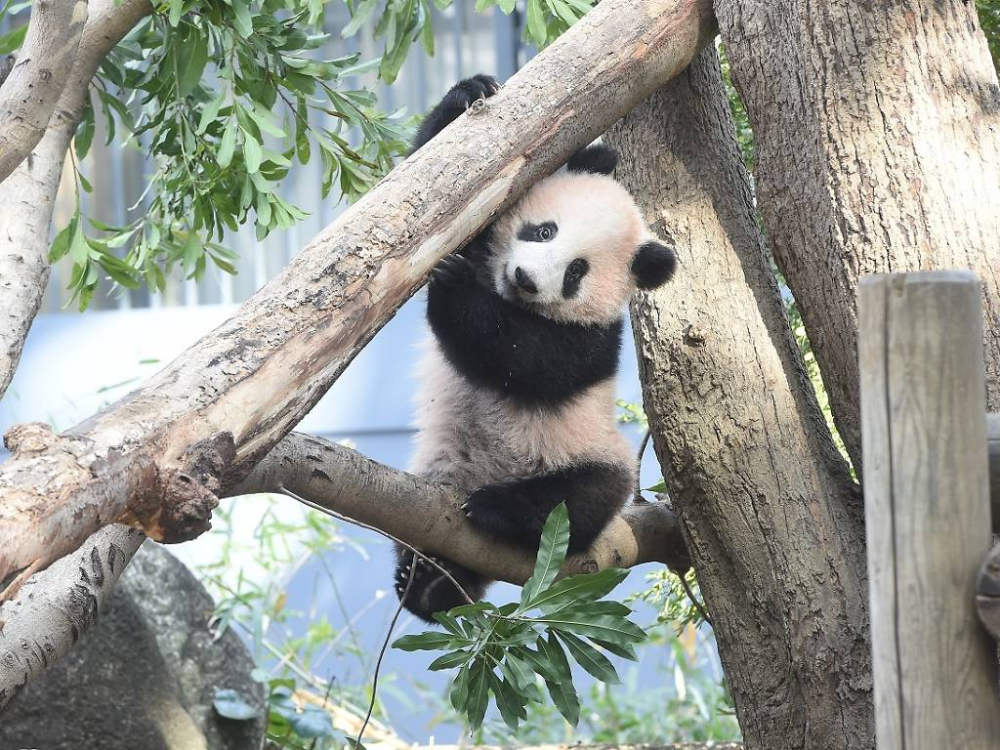
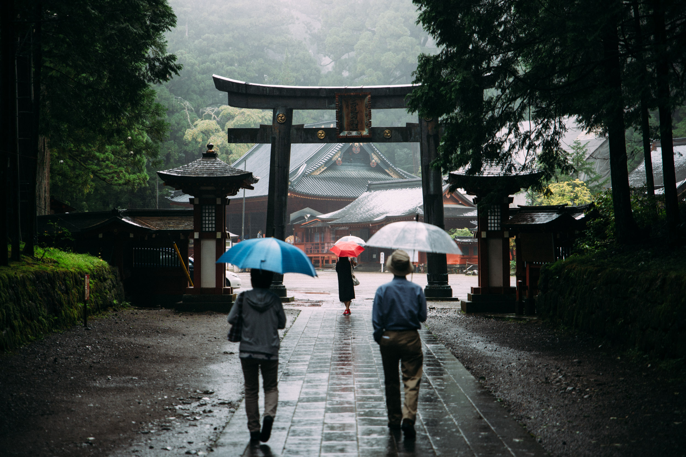

Tokyo experiences a humid subtropical climate (Köppen: Cfa), characterized by hot and humid summers, and mild, dry winters. The rainy season begins in early June and lasts through mid-July. Snowfall is rare but possible in winter. The annual temperature averages around 16°C and the region receives about 1520mm of rainfall yearly.
Wildlife & Nature

Despite being a megacity, Tokyo is home to green oases like Ueno Park and Meiji Shrine Forest. You can find birds like Japanese white-eyes, egrets, and sparrows, as well as tanuki (raccoon dogs) and urban foxes. In spring, cherry blossoms transform the city into a pink-hued paradise, attracting millions of visitors.
Seasonal Weather
Spring is famous for cherry blossoms and mild weather. Summer can be hot and humid with occasional typhoons. Autumn is cool and dry, often with vivid foliage in parks. Winter remains mostly sunny and dry, with occasional cold snaps but rare snow.
Interesting Weather Facts

Tokyo is vulnerable to typhoons and heavy rain in late summer. In 2019, Typhoon Faxai caused major disruptions. Tokyo’s urban heat island effect raises local temperatures significantly in summer. The city has implemented green rooftops and reflective pavements to combat this.